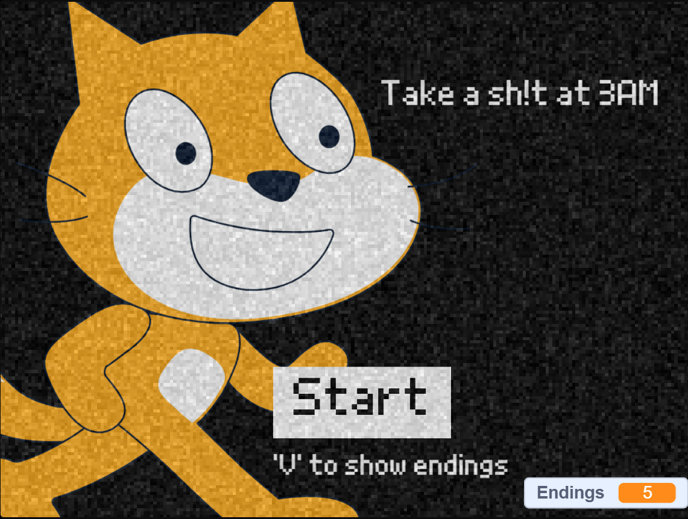
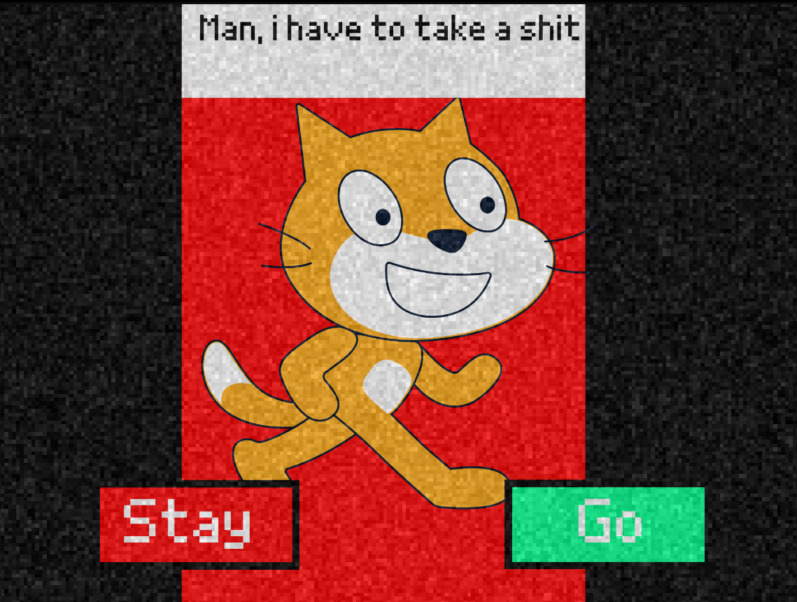
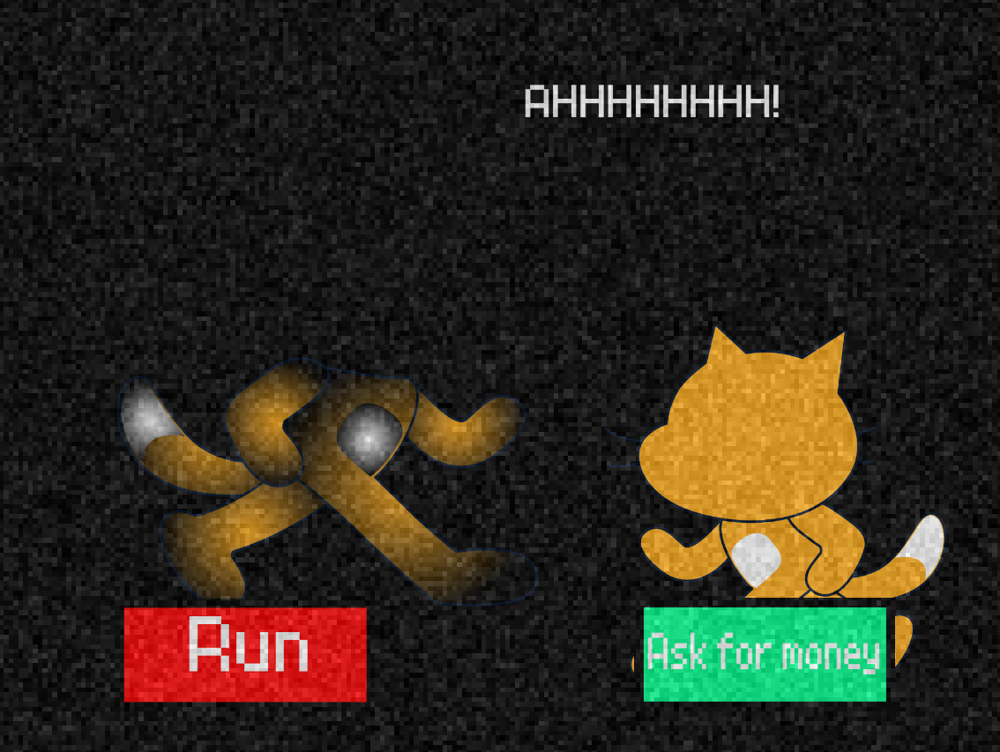

I need to take a sh*t rn
Take a Sh*t at 3 AM is an Horror multiple-ending game created by Voidder where you need to go to the bathroom at 3 AM. Try to get all the endings without dying lol 💀



The game is created on Scratch
The game has so many endings, go find them all
WIP